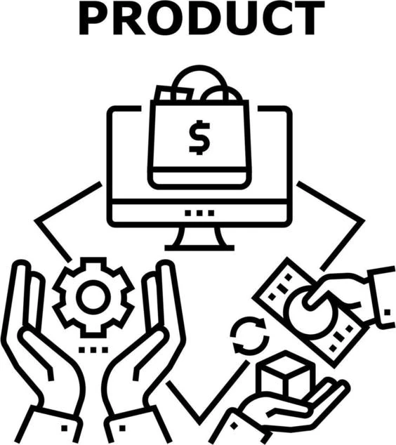

Etapa 2 de 2
Checkout

Nome do Produto
R$100
Pedido gerado!
Agora finalize o pagamento
- Abra o app do seu banco e entre na opção Pix.
- Escolha a opção Pagar / Pix copia e cola.
- Copie e cole o código pix ou escaneie o QR code.
- Depois, confirme o pagamento no app.
A aprovação leva no máximo 2 minutos.